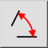
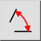
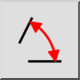
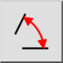

Ângulo
Barra de Ferramenta / Ícone:
 

Menu: Info > Ângulo
Atalho: I, A
Comandos: infoangle | ia
Esta é uma tradução automática.
Barra de Ferramenta / Ícone:
 

Menu: Info > Ângulo
Atalho: I, A
Comandos: infoangle | ia
Esta ferramenta mede o ângulo entre duas linhas dadas.